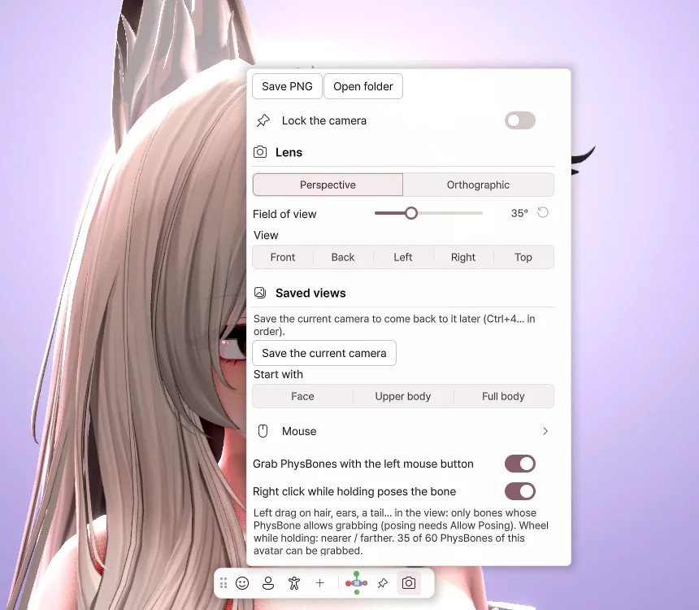

4. Main window

Left menu
| Menu | What it does |
|---|---|
| Menu | The avatar's Expressions menu and gestures → Chapter 5 |
| Devices | Webcam, microphone, tracking → Chapter 6 |
| Motion | Face, body, hands → Chapter 7 |
| Scene | Background, lighting, effects → Chapter 8 |
| Output | Sending to streaming software, screen share → Chapter 9 |
| Settings | Window, performance, language, hotkeys → Chapter 10 |
Click the pin at the top right of a panel to pin the panel in place.
Top
| Item | What it does |
|---|---|
| Avatar name | Switches the avatar. |
| FPS | Click it to change the frame rate. |
| ⟲ | If the pose gets stuck or the hair gets tangled, click it to return to the initial state. |
Bottom toolbar
| Button | What it does |
|---|---|
| Face · Upper body · Full body | Changes the camera framing. |
| + | Saves the current camera position. |
| Lock the camera | Keeps the mouse from moving the camera. |
| Camera | Opens the camera settings. |

- Save PNG — Saves the view as a picture, without the menus.
- Field of view — Makes the lens wider or narrower.
- Saved views — Jumps straight to a camera position you've saved.
- Grab PhysBones with the left mouse button — Lets you grab hair or tails with the mouse.
Mouse and keyboard
| Input | What it does |
|---|---|
| Right drag | Orbit the camera |
| Wheel drag | Pan the camera |
| Wheel | Zoom in · out |
| F1 | Hide / show the menus |
| Ctrl + 1 / 2 / 3 | Face / upper body / full body |
| Ctrl + Z | Undo moving the avatar |
Grabbing PhysBones
In the view, left-drag hair, ears or a tail to pull it. Right-click while holding to keep it in that shape, and grab the same part again to release it.
Moving the avatar
Use the Move · Rotate · Scale tools on the left of the view to move or turn the avatar. Click ⌂ to bring it back to the center.
Window and tray
Clicking the window's X sends it to the tray, and tracking and output keep running. Double-click the tray icon to open it again.